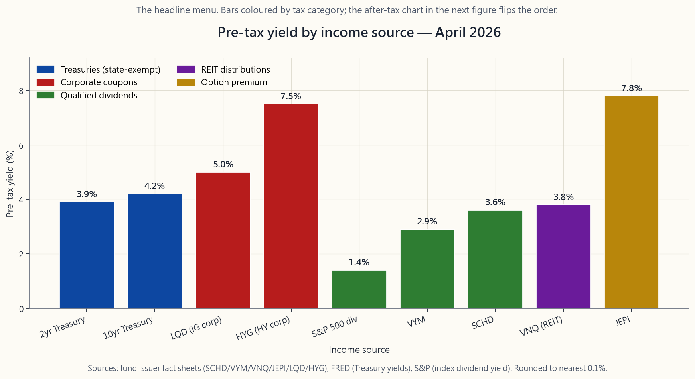
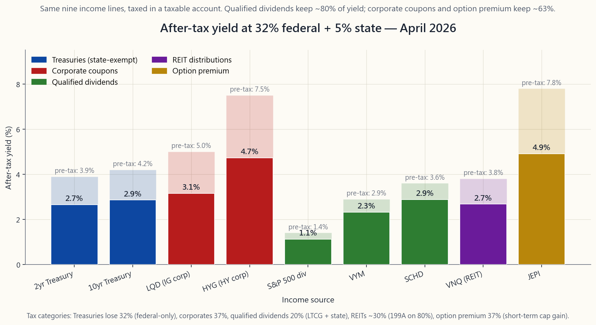

Week 36: Building an Income Portfolio — the L3 Capstone
1. Why This Is Important
Every other week in this tutorial has assumed you are accumulating — working, saving, and compounding. This week assumes the opposite. You have the pile. Now you need it to pay you. Whether that pile funds retirement at 65, supports a partner who stopped working, or simply covers the tuition cheque that arrives every September, the moment you flip from accumulation to distribution the optimisation problem changes shape entirely. You stop optimising for terminal wealth and start optimising for *cash that lands in the chequing account on schedule, after tax, with the smallest possible chance of running out*.
Four reasons this matters as the capstone for the L3 income block.
only has to compound. An income portfolio has to compound and produce reliable cash and survive a bad first decade — the "sequence-of-returns risk" that the famous 4% rule was invented to answer. We will explain why the 4% rule is correct in spirit and misleading in detail in 2026.
a 5% qualified dividend, a 5% REIT distribution, and a 5% covered-call premium look identical on a brokerage statement and are radically different products. They have different default risks, different inflation sensitivities, different drawdown profiles, and — most expensively — different tax treatments. A portfolio that ignores the difference can lose 30% of its spendable yield to the IRS for no good reason.
control.** Tax efficiency is the explicit anchor. In the 32% federal bracket, a qualified dividend keeps about 80 cents of every dollar. A bond coupon keeps about 63 cents. A short-term option premium keeps the same 63 cents — sometimes less, depending on state. The order in which you fill your taxable, IRA, and Roth accounts with these income streams is worth more than picking better individual tickers ever will be.
need a distribution-side translation.** During accumulation, the four tranches govern how you allocate. During distribution they govern which sleeve you draw from this quarter. The income capstone is what stitches everything from Weeks 4-5 (60/40 and bonds), Weeks 14-15 (pair trades and barbell), and Weeks 26-28 (options as orders) into a single cash-producing machine.
This lesson lays out the four real income sources, the after-tax ladder, the canonical product menu (SCHD / VYM / DVY / SPYI for dividend equity, BND / VTEB / PFF for fixed income, VNQ for REITs, JEPI / JEPQ for premium-write), the 4% rule and its 2026 critique, and ends with two model portfolios — one taxable, one tax-advantaged — that target a 4-5% sustainable yield with bond-like volatility.
2. What You Need to Know
2.1 The Four Real Sources of Portfolio Income
Strip away every product wrapper and there are only four ways a US portfolio actually produces cash. Memorise this list. Every yield ETF ever launched is some packaging of these four ingredients.
risk is rounded to zero. State and local income tax do not apply. Federal tax applies at ordinary rates. The 2-year Treasury is the floor your safe sleeve cannot reasonably go below; the 10-year is the duration anchor for a balanced portfolio.
pay you to lend to them. IG (LQD, AGG's corporate slice, BND's corporate slice) yields 80-150 bps above Treasuries. HY (HYG, JNK) yields 250-450 bps above. Both pay ordinary income at the federal and state level, which is critical when you compute after-tax.
the IRS holding-period test are taxed at long-term capital-gains rates: 0/15/20% federal depending on bracket, plus state. The S&P 500 yields about 1.4% as of April 2026. Curated dividend ETFs (SCHD, VYM, DVY) yield 2.5-3.7%. The premium over the index is compensation for tilting toward "boring" sectors — staples, healthcare, financials, industrials — and away from the cap-light compounders that drove the post-2020 rally.
short-term income. With near-zero exception, equity-option premium is taxed as short-term capital gains at the federal and state level. The headline distribution yields on JEPI (~7-8%), QYLD, PUTW, SPYI, and the entire buy-write fund family are large precisely because the IRS gets a big bite first.
A fifth category you will see in marketing — REIT distributions — is partly category 2 (the REIT pays through interest and rent collected) and partly category 3 (qualified dividends from any equity holdings). REITs as a wrapper get a 20% Section 199A deduction at the investor level since 2018, which makes them somewhat tax-friendlier than raw bond coupons but still meaningfully worse than qualified dividends.
The yield-hierarchy chart shows the headline (pre-tax) numbers as of April 2026. Read it as the menu before tax.

2.2 The After-Tax Hierarchy and Why It Reverses the Menu
Pre-tax, JEPI's 7.8% looks like the obvious winner. After tax in a taxable account at the 32% federal bracket plus 5% state, the picture inverts. The next chart applies the right tax rate to each line item:
- Treasury coupons: 32% federal, 0% state ⇒ 32% effective.
- IG / HY corporate coupons: 32% + 5% = 37% effective.
- Qualified dividends (S&P 500, SCHD, VYM, DVY): 15% federal LTCG +
- REIT distributions (VNQ): 37% combined, but the 199A deduction
- Option-premium ETFs (JEPI/QYLD/SPYI): 32% + 5% = 37% effective.

The operational rule that falls out:
- Hold qualified-dividend equity in the taxable account — the
- Hold option-premium and HY-corporate sleeves in the IRA / 401(k) —
- **Hold Treasuries in the taxable account if you live in a high
- Hold REITs in the IRA if your bracket is high enough that the
This is location, not allocation. It is one of the few free lunches the US tax code gives you.
2.3 The Canonical Product Menu
Theory only matters if you can implement it with three or four tickers at a Vanguard, Fidelity, or Schwab account. Here is the April-2026 product menu by sleeve.
Dividend equity (qualified yield, growth-of-income).
SCHD— Schwab US Dividend Equity. ~100 holdings, 10-year
VYM— Vanguard High Dividend Yield. ~440 holdings, market-cap
DVY— iShares Select Dividend. ~100 holdings, value-heavier than
SPYI— NEOS S&P 500 High-Income. Index-tracking with a partial
The yield ladder is real. SCHD sits in the middle of the ladder by design — the dividend-growth screen filters out the highest-yielding names that are in distress. That is a feature, not a bug, and is why we treat SCHD as the default dividend sleeve for the model portfolio in §2.6.
Fixed income.
BND— Vanguard Total Bond Market. Treasuries + IG corporates +
VTEB— Vanguard Tax-Exempt Bond. Investment-grade municipals.
PFF— iShares Preferred & Income Securities. Preferred stock,
TLT/IEF— long and intermediate Treasury duration tools when
Real assets / inflation hedge.
VNQ— Vanguard Real Estate. The REIT sleeve. Yield ~3.8%,
SCHH— cheaper REIT alternative, similar profile.
JEPI— JPMorgan Equity Premium Income. ~80% defensive low-vol
JEPQ— Nasdaq cousin of JEPI. Higher volatility, higher yield,
QYLD/XYLD/RYLD— passive monthly at-the-money buy-write
PUTW/WTPI— systematic put-write ETFs. Mirror image of
2.4 The 4% Rule and Why It Needs an Update for 2026
Bengen (1994) and the Trinity study (1998) gave retirees the most quoted rule of thumb in finance: with a 60/40 portfolio, you can safely withdraw 4% of the initial balance, increase that dollar amount by inflation each year, and have a 95%+ chance of not running out over a 30-year retirement. The rule is based on rolling 30-year windows of US data 1926-1995.
Three things have changed.
retirement window started above 5%.** The 2010-2021 zero-rate regime crushed the bond contribution to 4%-rule sustainability. Updates by Pfau and others put the safe withdrawal rate as low as 2.8% for portfolios starting in 2010-2020. The 2022-2024 yield reset has lifted that back to roughly 3.5-3.8%. April 2026 is the first time since 2008 that the math works close to the original number again, but it is not 4%.
through 1973-1974 (60/40 down a real ~30%) ran out of money in roughly year 22. A retiree drawing 4% through 1995-1999 (60/40 up a real ~140%) finished with roughly ten times the starting balance. The same rule, the same numerical sequence, the same asset mix — totally different lived experience.
Klinger guard rails, the Bogleheads' "spend a percent of current balance," and Vanguard's "dynamic spending" all beat the rigid 4% rule by 50-100 bps of safe withdrawal in Monte-Carlo, with essentially no behavioural cost. This week's interactive uses a simplified version: target 4-5% of current balance, with a hard floor and ceiling.
The honest April-2026 number for a 60/40 portfolio with no discretionary-spending flexibility is roughly 3.7%. With the flexibility to cut 10-15% in bad years, 4.5%. The model income portfolio in §2.6 is engineered around that 4-5% target.
2.5 The Distribution-Side Four-Tranche Framework
The four tranches in accumulation translate cleanly to distribution. The same buckets exist; the direction of cash flow reverses.
| Tranche | Accumulation purpose | Distribution purpose |
|---|---|---|
| 1. Cash / T-bills | Emergency fund | 1-2 years of spending, the "no-sell zone" |
| 2. Bonds | Volatility ballast | 5-7 years of spending; refilled from sleeve 3 in good years |
| 3. Diversified equity | Compounding engine | The wealth machine; refills sleeve 2 |
| 4. Concentrated bets | Asymmetric upside | Optional yield overlays (JEPI, premium-write) |
The barbell is the cross-section: short-duration safe income on one end (T-bills, 2-year Treasuries, VTEB if taxable), and long-duration real assets on the other (VNQ, equity dividend growers, optional premium overlay). The middle — long-duration intermediate Treasuries — is the least useful sleeve in a distribution portfolio relative to the two ends, because it has neither the nominal-rate sensitivity that long Treasuries give nor the inflation pass-through that equities and real estate give.
The interactive in §2.7 is the live version of this. You set the five-sleeve mix and get blended yield, after-tax yield (with bracket toggle), expected volatility, and expected drawdown.
2.6 Two Model Portfolios
Two reference points. Both target a 4-5% pre-tax distribution yield with bond-like volatility (8-10% annualised standard deviation). Both are buildable today at any major US broker for under 12 bps in weighted expense ratio.
Model A — Taxable, 32% federal bracket.
| Sleeve | Ticker | Weight | Yield | Rationale |
|---|---|---|---|---|
| Dividend equity | SCHD | 35% | 3.6% | Qualified dividends, low ER, sector diversity |
| Dividend equity | VYM | 10% | 2.9% | Adds breadth, market-cap weight |
| Tax-exempt bonds | VTEB | 25% | 3.4% (≈5.0% TEY) | Federal exempt; lifts after-tax yield substantially |
| REITs | VNQ | 10% | 3.8% | Inflation pass-through; 199A partial relief |
| Treasuries | IEF (7-10yr) | 15% | 4.2% | State-tax-exempt anchor |
| T-bills | SGOV | 5% | 4.5% | Spending buffer |
| Blended | 100% | 3.7% | After-tax ≈ 3.0% |
Volatility ~9% annualised; max-drawdown estimate -22% (1973-style inflation shock or 2022-style dual decline). After-tax distribution yield 3.0%; with a balance-of-portfolio variable-spending rule you can sustain 4.0-4.5% real spending.
Model B — Tax-advantaged (IRA / 401(k)), 32% bracket.
| Sleeve | Ticker | Weight | Yield | Rationale |
|---|---|---|---|---|
| Dividend equity | SCHD | 30% | 3.6% | Qualified-dividend feature wasted; here for dividend-growth |
| Premium-write | JEPI | 15% | 7.8% | Highest pre-tax yield; tax irrelevant inside IRA |
| Total bond | BND | 25% | 4.6% | IG + Treasury blend |
| HY corporate | HYG | 10% | 7.5% | Credit premium; HY taxed punitively in taxable |
| REITs | VNQ | 10% | 3.8% | 199A irrelevant inside IRA |
| Cash | SGOV | 10% | 4.5% | Buffer |
| Blended | 100% | 5.1% | After-tax = 5.1% (no tax inside) |
Volatility ~10% annualised; max-drawdown estimate -25%. The IRA portfolio runs higher pre-tax yield because every income source is taxed identically — so you load up on the punitively-taxed sleeves exactly here, where the punishment does not apply.
The interactive lets you build either, and the bracket toggle shows the Model-A and Model-B after-tax numbers side by side.
2.7 The Live Builder
The interactive is a five-sleeve allocator: Treasuries, IG corporate, qualified dividends, REITs, premium-write. It computes pre-tax yield (weighted average), after-tax yield (weighted by tax category at the selected bracket), expected volatility (square-root of weighted covariance), and expected maximum drawdown (heuristic: 0.6 × peak historical loss for each sleeve, blended by weight). The tax-bracket toggle covers 12% / 22% / 32% / 37%, which is the four brackets where real allocation decisions get made. Use it to verify the §2.6 model portfolios; use it to test your own.
3. Common Misconceptions
after-tax conversion and a default-risk adjustment is marketing-grade arithmetic. JEPI's 7.8% in a taxable account at the 37% bracket is 4.9%. SCHD's 3.6% in the same account is 2.9%. The gap is one-third of the headline.
are fully federally taxable. In Texas, Florida, or Tennessee that distinction is meaningless; in California or New York it is worth roughly 5% of the coupon.
federal bracket × (1 - state rate adjustment) makes the tax-equivalent yield higher. At the 12% federal bracket, munis almost never win; at the 32% federal bracket, they almost always do.
pre-paid sale of upside (Week 27). Over a full cycle, JEPI and QYLD lag their unhedged underlyings by 300-500 bps annualised.
REIT distributions are non-qualified ordinary income, partially sheltered by the 20% 199A deduction.
dividend-paying half of the S&P 500 has a lower beta than the index, but in a credit/financial crisis (2008) banks and REITs — which dominate dividend ETFs — drop further than the index.
need the cash, no — that is buying with one hand and selling with the other, and creates avoidable tax in a taxable account.
1926-1995 sample of US data. It has failed in retro-tested non-US samples and in zero-rate windows. April 2026 has the math close to working again; for low-flexibility retirees, plan for 3.5-4.0%.
covered this in detail. The 1970s and 2022 are existence proofs of the opposite.
fill in the others."** Backwards. Pick the sleeve with the highest *after-tax expected return per unit of drawdown contribution* first.
4. Q&A Section
**Q1: My broker is showing JEPI's "30-day SEC yield" as 8.4% but the "distribution yield" as 7.6%. Which is right?**
Distribution yield is what landed in your account over the trailing 12 months divided by current price. SEC yield is a regulator-defined forward-looking estimate based on the most recent month's cash flow, annualised. For a stable holding, the two should be within 50 bps. For premium-income funds where the option-premium varies with VIX, the SEC yield can be misleading in either direction. Use distribution yield for budgeting; use SEC yield for cross-fund comparisons.
Q2: Should I buy individual bonds or BND?
For amounts under roughly $100k of bond exposure, BND. The fund has ~10,000 bonds and you cannot replicate that diversification at retail sizes. Above that, individual Treasuries on the auction market are attractive — you control the maturity, you can ladder, and you skip the 3 bp expense ratio. Individual corporate bonds at retail are a trap: spreads are wide, liquidity is thin, and a credit event sinks the position completely.
**Q3: What about a "60/40 of yield" — half qualified dividends, half bond coupons?**
That is essentially Model A in §2.6. The distribution yield works out to 3.7% pre-tax, ~3.0% after-tax in the 32% bracket. The volatility is bond-like (~9%). For a baseline retiree-style portfolio that is the right ballpark — but tilt the bonds toward VTEB if you are taxable, and prefer SCHD over VYM for the dividend-growth tilt.
Q4: Is the "yield-on-cost" metric useful?
For pep-talk purposes, yes. For decisions, no. Yield-on-cost rises because the price you paid is fixed and the dividend grows. It tells you nothing about whether your current capital is generating an adequate yield versus alternatives. Always compare current distribution yields, not cost-basis yields.
Q5: How do I know if a high yield is sustainable?
Three quick screens. (a) Payout ratio: dividend / earnings under 70% for industrials and staples, under 90% for utilities, under 95% for REITs. (b) Free-cash-flow coverage: dividends plus buybacks under free cash flow. (c) The fund's distribution history: did it cut in 2008, 2020, 2022? A buy-write fund cutting in 2022 is normal; an equity-dividend fund cutting is a signal.
Q6: What about preferred stock?
PFF yields ~6.5% and feels like a bond. It is not. Preferreds are junior to bonds, senior to common, and almost entirely issued by banks and insurers. The 2008 crisis was a near-total wipe of bank preferreds. Sized at 5-10% of a bond sleeve they are a fine yield enhancer; sized at 30%+ they are a concentrated bank-credit bet.
Q7: Should I use leverage on bonds (NTSX, RPAR, etc.)?
Levered "stocks-and-bonds in the same fund" products amplify the correlation assumption. They worked beautifully 1995-2021 and melted down in 2022 when stocks and bonds fell together. They are an accumulation tool, not a distribution tool. Do not use them for the income sleeve.
Q8: How often should I rebalance an income portfolio?
Annually, plus a calendar-driven cash-refill of the spending-buffer sleeve. The "smart" rule is: in a year where the equity sleeve is up sharply, refill 18 months of spending into cash and bonds; in a flat or down year, do not sell equities — draw from cash and bonds. This is the four-tranche framework working in reverse.
Q9: What about international dividend ETFs (VYMI, IDV)?
Our default is US-only investable. International dividend ETFs add concentration in financials and energy and introduce withholding-tax leakage that takes a bite out of the qualified-dividend rate. If you want non-US exposure, take it on the total-return side of the portfolio (the equity growth sleeve), not the income sleeve.
Q10: Is there a fund-of-funds that does all of this for me?
The closest is VTINX (Vanguard Target Retirement Income), AOK
(iShares conservative allocation), or JAAA + JBBB (Janus
Henderson AAA / BBB CLO funds for a credit-tilted income sleeve). All
of them solve part of the problem and none solve the
account-location problem in §2.2 — which is the largest source of
after-tax yield uplift available to you. Build it sleeve by sleeve.
Q11: How much cash should I hold?
For a retiree, 1-2 years of spending. For a working accumulator, 3-6 months. The reason for the asymmetry is the tail. A retiree who is forced to sell equities at a 30% drawdown to fund this month's groceries is destroying compounding more than any 1% cash drag could cost. The cash sleeve is insurance against the bad-sequence tail.
Q12: What about annuities?
A single-premium immediate annuity (SPIA) at age 75-80 looks much better than the 4% rule for that portion of the portfolio you genuinely need to floor. The right framing is not "annuity vs no annuity" but "what fraction of base spending does Social Security cover, and do I need to top up the rest with a SPIA?" That is a financial-planning question more than an investment one — and a fine reason to talk to a fee-only fiduciary at the right age.
第36週：建立收入型投資組合——L3 總結課
1. 為何此課題至關重要
本教程每一週的其他課節均假設你處於積累階段——工作、儲蓄、複利增長。本週則假設情況相反。你已累積了一筆資金，現在需要它付錢給你。無論這筆資金是用於65歲退休、支持已停止工作的伴侶，還是只為支付每年9月到期的學費，當你從積累模式轉換到提取模式，優化問題的形態便會截然不同。你不再優化最終財富，而是優化按時、稅後、以最低機率耗盡的到賬現金。
以下四個原因說明，為何此課題是L3收入板塊的總結課。
本課程將梳理四種真實收入來源、稅後收益率梯級、標準產品清單（股息型股票採用SCHD / VYM / DVY / SPYI，固定收益採用BND / VTEB / PFF，房地產信託基金採用VNQ，期權金收益採用JEPI / JEPQ），以及4%法則及其2026年的修正，最後以兩個示範投資組合作結——一個適用於應稅賬戶，一個適用於稅務優惠賬戶——目標為實現4-5%的可持續收益率，同時保持接近債券的波動性。
2. 你需要掌握的知識
2.1 四種真實的投資組合收入來源
剝去所有產品包裝，美國投資組合實際上只有四種方式產生現金。熟記這份清單。所有曾推出的收益率交易所買賣基金，都是這四種成分的某種包裝。
你在市場推廣材料中會見到的第五類——房地產信託基金分派——部分屬於第二類（房地產信託基金通過收取利息和租金支付），部分屬於第三類（來自其持有的任何股票的合資格股息）。作為一種包裝結構，房地產信託基金自2018年起在投資者層面可享有20%的第199A條款扣除，使其稅務效益略優於原始債券票息，但仍明顯遜於合資格股息。
收益率層級圖表顯示截至2026年4月的表面（稅前）數據。將其視為稅前的菜單。
2.2 稅後層級及其為何顛覆菜單
稅前看來，JEPI的7.8%顯然是最優選擇。但在32%聯邦稅率加5%州稅的應稅賬戶下，情況反轉。下圖對各項目按正確稅率進行換算：
- 國債票息：32%聯邦稅，0%州稅 ⇒ 實際稅率32%。
- 投資級/高收益公司債票息：32% + 5% = 實際稅率37%。
- 合資格股息（標普500、SCHD、VYM、DVY）：15%聯邦長期資本增值稅 + 5%州稅 = 實際稅率20%。
- 房地產信託基金分派（VNQ）：合計37%，但第199A條款扣除將應稅部分降至80%，實際稅率約29.6%。
- 期權金交易所買賣基金（JEPI/QYLD/SPYI）：32% + 5% = 實際稅率37%。
由此得出的操作規則：
- 在應稅賬戶持有合資格股息股票——優惠稅率正是其全部意義所在。
- 在個人退休賬戶/401(k)持有期權金及高收益公司債子賬戶——稅務損耗可獲遞延（傳統賬戶）或消除（羅斯賬戶）。
- 如居住在高州稅州份（加利福尼亞州/紐約州/夏威夷州），在應稅賬戶持有國債——州稅豁免是免費的好處。
- 若你的稅率高到第199A條款扣除無法完全抵消州稅的程度，在個人退休賬戶持有房地產信託基金。
2.3 標準產品清單
理論只有在能夠付諸實踐時才有意義，而且要能在富達、先鋒或嘉信等主要券商的賬戶中，用三四個代碼實現。以下是2026年4月的產品清單，按子賬戶分類。
股息股票子賬戶（合資格收益率，股息增長型）。
SCHD— 嘉信美國股息股票交易所買賣基金。約100隻持倉，設10年股息增長篩選機制，板塊分佈均衡，傾向工業、必需消費品、醫療保健。收益率約3.6%，開支比率6個基點。VYM— 先鋒高股息率交易所買賣基金。約440隻持倉，在指數高股息率的一半中按市值加權。收益率約2.9%，開支比率6個基點。DVY— 安碩精選股息交易所買賣基金。約100隻持倉，價值傾向比SCHD更重。收益率約3.4%，開支比率38個基點。SPYI— NEOS標普500高收益交易所買賣基金。追蹤指數並附加部分認購期權備兌策略；定位為股息股票與期權金的混合產品。表面收益率約12%，但期權金部分繼承了期權金的稅務問題。
固定收益子賬戶。
BND— 先鋒整體債券市場交易所買賣基金。包含國債、投資級公司債及機構按揭抵押證券，中等存續期約6年。默認核心債券選擇。VTEB— 先鋒免稅債券交易所買賣基金。投資級市政債券。對應稅賬戶中高稅率投資者而言，稅務等值收益率大幅提升；若聯邦稅率達32%或以上，這是應稅賬戶中債券子賬戶的正確工具。PFF— 安碩優先股及收益證券交易所買賣基金。優先股，收益率6-7%，但大多數優先股由金融機構發行，因此這個子賬戶實質上是押注銀行信用風險，而非純粹的債券。TLT/IEF— 長期及中期國債存續期工具，適用於需要將利率敞口與信用敞口分離的情況。
VNQ— 先鋒房地產交易所買賣基金。房地產信託基金子賬戶。收益率約3.8%，通脹敏感性通過租金升幅條款和房地產重置成本股權傳導。SCHH— 較便宜的房地產信託基金替代品，特徵相近。
JEPI— 摩根大通股票溢價收入交易所買賣基金。約80%防禦性低波動性股票 + 約20%合成認購期權備兌溢價的股票掛鈎票據。收益率約7-8%，開支比率35個基點。該類別中規模最大的基金。JEPQ— JEPI的納斯達克版本。波動性更高，收益率更高，回報結構更接近QYLD，但股票子賬戶具有主動選股特徵。QYLD/XYLD/RYLD— 分別針對QQQ / SPY / IWM的被動式每月平價備兌認購期權策略。純粹的備兌認購期權敞口；上行封頂問題嚴重（第27週）。PUTW/WTPI— 系統性認沽期權賣出策略交易所買賣基金。備兌認購期權的鏡像；以下行緩衝替代上行封頂（第28週）。
2.4 4%法則及其2026年的更新需要
本根（1994年）及三一研究（1998年）為退休人士提供了金融界引用最多的經驗法則：持有60/40投資組合，可安全提取初始結餘的4%，每年按通脹調整提款金額，30年退休期內資金耗盡的概率高達95%以上。此法則基於1926年至1995年美國數據的滾動30年期窗口。
三件事已發生改變。
對於在支出彈性方面毫無靈活性的60/40投資組合，2026年4月的誠實數字約為3.7%。若願意在糟糕年份削減10-15%的支出，則可達4.5%。第2.6節的示範收入投資組合正是圍繞這個4-5%的目標設計的。
2.5 分配端的四部分框架
積累階段的四個部分，可直接轉化為分配階段的對應概念。同樣的子賬戶依然存在；改變的是現金流的方向。
| 部分 | 積累階段用途 | 分配階段用途 |
|---|---|---|
| 1. 現金/短期國庫券 | 緊急備用金 | 1-2年支出，「無需出售」緩衝區 |
| 2. 債券 | 波動性緩衝 | 5-7年支出；在好年份從子賬戶3補充 |
| 3. 分散型股票 | 複利增長引擎 | 財富機器；補充子賬戶2 |
| 4. 集中型押注 | 不對稱上行空間 | 可選收益率疊加層（JEPI、期權金賣出策略） |
槓鈴策略是其橫截面：一端為短存續期的安全收益（短期國庫券、2年期國債、應稅賬戶中的VTEB），另一端為長存續期的實物資產（VNQ、股息增長型股票、可選的期權金疊加層）。中間部分——長存續期的中期國債——是分配型投資組合中最不實用的子賬戶，相對於兩端而言，既沒有長期國債帶來的名義利率敏感性，也沒有股票和房地產帶來的通脹傳導效應。
第2.7節的互動工具是此框架的實時版本。你設定五個子賬戶的組合比例，即可獲得綜合收益率、稅後收益率（附稅率級距切換）、預期波動性及預期回撤。
2.6 兩個示範投資組合
以下提供兩個參考基準。兩者均以實現4-5%稅前分派收益率為目標，同時保持接近債券的波動性（年化標準差8-10%）。兩者今天均可在任何主要美國券商建立，加權開支比率低於12個基點。
示範A——應稅賬戶，聯邦稅率32%。
| 子賬戶 | 代碼 | 比重 | 收益率 | 理據 |
|---|---|---|---|---|
| 股息股票 | SCHD | 35% | 3.6% | 合資格股息，低開支比率，板塊多元化 |
| 股息股票 | VYM | 10% | 2.9% | 增加廣度，按市值加權 |
| 免稅債券 | VTEB | 25% | 3.4%（≈5.0%稅務等值收益率） | 聯邦免稅；大幅提升稅後收益率 |
| 房地產信託基金 | VNQ | 10% | 3.8% | 通脹傳導；第199A條款部分減免 |
| 國債 | IEF（7-10年期） | 15% | 4.2% | 州稅豁免錨點 |
| 短期國庫券 | SGOV | 5% | 4.5% | 支出緩衝 |
| 綜合 | 100% | 3.7% | 稅後≈3.0% |
年化波動性約9%；最大回撤估算-22%（1973年式通脹衝擊或2022年式股債雙跌）。稅後分派收益率3.0%；配合結餘掛鈎的可變支出規則，可維持4.0-4.5%的實際支出。
示範B——稅務優惠賬戶（個人退休賬戶/401(k)），聯邦稅率32%。
| 子賬戶 | 代碼 | 比重 | 收益率 | 理據 |
|---|---|---|---|---|
| 股息股票 | SCHD | 30% | 3.6% | 合資格股息優惠在此無用武之地；為股息增長特性而持有 |
| 期權金策略 | JEPI | 15% | 7.8% | 稅前收益率最高；稅務問題在個人退休賬戶內無關緊要 |
| 整體債券 | BND | 25% | 4.6% | 投資級債券與國債的混合 |
| 高收益公司債 | HYG | 10% | 7.5% | 信用溢價；高收益在應稅賬戶中稅務懲罰嚴重 |
| 房地產信託基金 | VNQ | 10% | 3.8% | 第199A條款在個人退休賬戶內無關緊要 |
| 現金 | SGOV | 10% | 4.5% | 緩衝 |
| 綜合 | 100% | 5.1% | 稅後=5.1%（賬戶內無稅） |
年化波動性約10%；最大回撤估算-25%。個人退休賬戶投資組合的稅前收益率較高，因為每種收入來源的稅務待遇完全相同——因此你將受稅務懲罰的子賬戶集中放在此處，使懲罰不再適用。
互動工具讓你建立任一組合，稅率級距切換功能可並排顯示示範A和示範B的稅後數據。
2.7 實時建立工具
互動工具是一個五個子賬戶的配置器：國債、投資級公司債、合資格股息、房地產信託基金、期權金策略。它計算稅前收益率（加權平均值）、稅後收益率（按選定稅率級距對各稅務類別加權）、預期波動性（加權協方差的平方根），以及預期最大回撤（啟發式方法：各子賬戶歷史峰值損失的0.6倍，按比重加權混合）。稅率級距切換涵蓋12% / 22% / 32% / 37%，這是真實資產配置決策涉及的四個稅率級距。用它驗證第2.6節的示範投資組合；也用它測試你自己的方案。
3. 常見誤解
4. 問答環節
問題1：我的券商顯示JEPI的「30日美國證監會收益率」為8.4%，但「分派收益率」為7.6%。哪個才是正確的？
分派收益率是過去12個月實際到賬的現金除以當前價格所得。美國證監會收益率是監管機構定義的前瞻性估算，基於最近一個月的現金流量年化計算。對於穩定持倉，兩者應相差不超過50個基點。對於期權金收入基金，期權金隨波動率指數而變化，美國證監會收益率可能在任何方向出現誤導。用分派收益率作預算規劃；用美國證監會收益率進行跨基金比較。
問題2：我應該購買個別債券還是BND？
對於低於約10萬美元的債券敞口，選BND。該基金持有約10,000隻債券，你無法以零售規模複製這種分散投資。超過這一金額，透過拍賣市場購買個別國債具有吸引力——你可控制到期日、建立梯級組合，並省去3個基點的開支比率。個別公司債在零售層面則是陷阱：差價寬闊、流動性薄弱，一旦發生信用事件整個持倉便大受打擊。
問題3：「收益率60/40」組合——一半合資格股息、一半債券票息，如何？
這基本上就是第2.6節的示範A。分派收益率約3.7%稅前，在32%稅率下稅後約3.0%。波動性接近債券（約9%）。對於基準退休人士風格的投資組合，這是合理的範圍——但應稅賬戶中的債券子賬戶應向VTEB傾斜，股息增長傾向方面應優先選擇SCHD而非VYM。
問題4：「成本收益率」指標有用嗎？
用於激勵目的，有用。用於決策，沒有用。成本收益率上升，是因為你當初的買入價格固定而股息持續增長。它無法告訴你，你的當前資本相對於其他選擇是否在產生足夠的收益率。請始終比較當前分派收益率，而非成本基準收益率。
問題5：如何判斷高收益率是否可持續？
三個快速篩選標準。（a）派息比率：工業和必需消費品股票的股息/盈利應低於70%，公用事業公司低於90%，房地產信託基金低於95%。（b）自由現金流覆蓋：股息加股份回購應低於自由現金流。（c）基金的分派歷史：2008年、2020年、2022年是否曾削減分派？備兌期權基金在2022年削減屬正常；股息股票基金削減則是警示信號。
問題6：優先股怎麼樣？
PFF收益率約6.5%，感覺像債券，但實際並非如此。優先股次於債券、優先於普通股，幾乎完全由銀行和保險公司發行。2008年危機幾乎完全清零了銀行優先股。在債券子賬戶中佔比5-10%，是不錯的增益工具；佔比30%以上則是集中的銀行信用押注。
問題7：我是否應該在債券上使用槓桿（NTSX、RPAR等）？
槓桿化的「股票與債券合一」產品放大了相關性假設。這類產品在1995至2021年間表現極佳，並在2022年股債同跌時大幅回落。它們是積累工具，而非分配工具。不要將其用於收入子賬戶。
問題8：收入型投資組合應多久再平衡一次？
每年一次，另加按日曆驅動補充支出緩衝子賬戶的現金。「智慧型」規則是：在股票子賬戶大幅上漲的年份，將18個月的支出補充至現金和債券；在持平或下跌年份，不出售股票——從現金和債券中提款。這就是四部分框架反向運作的機制。
問題9：國際股息交易所買賣基金（VYMI、IDV）如何？
我們的默認範圍是僅限美國的可投資標的。國際股息交易所買賣基金增加了金融和能源板塊的集中度，並引入預扣稅漏損，蠶食合資格股息稅率的優惠。如需非美國敞口，請在投資組合的總回報端（股票增長子賬戶）實現，而非收入子賬戶。
問題10：有沒有一隻基金中的基金能為我處理所有這些問題？
最接近的是VTINX（先鋒目標退休收入基金）、AOK（安碩保守型配置基金），或JAAA + JBBB（Janus Henderson AAA / BBB評級貸款抵押證券基金，用於信用傾斜的收入子賬戶）。所有這些基金都只解決了部分問題，沒有一隻能解決第2.2節中的賬戶定位問題——而那才是你所能獲得的最大稅後收益率提升來源。請逐個子賬戶建立。
問題11：我應持有多少現金？
對於退休人士，1-2年的支出。對於在職積累者，3-6個月。不對稱的原因在於尾部風險。一位被迫在股票回撤30%時出售股票以支付本月生活費的退休人士，其複利損耗遠超任何1%的現金拖累成本。現金子賬戶是針對惡劣順序尾部風險的保險。
問題12：年金如何？
對於75至80歲的老人而言，一次性即時年金（SPIA）在投資組合的該部分資金上，看起來比4%法則更為可取，尤其是你確實需要保底的那部分資金。正確的思考框架不是「年金或不年金」，而是「社會保障覆蓋了多少基本支出，我是否需要用一次性即時年金填補不足？」這更多是一個財務規劃問題，而非投資問題——在適當年齡諮詢收費制獨立信托人是很好的理由。
第36週：打造收益型投資組合——L3 期末整合
1. 為何這很重要
本教學中的每一週幾乎都假設你正在累積資產——工作、儲蓄、透過複利增長。這一週的假設恰恰相反。你已經有了那筆錢。現在你需要它為你帶來收益。無論那筆錢是用來支應65歲的退休生活、支持一位停止工作的伴侶，還是單純支付每年九月到期的學費，當你從累積期翻轉到提領期，最佳化問題的形態就會完全改變。你不再以終端財富為最佳化目標，而是以準時、稅後、且不虞匱乏地進入支票帳戶的現金為目標。
這做為L3收益區塊期末整合的四大理由如下。
本課介紹四種真實的收益來源、稅後的階梯排序、標準商品清單（股利股票方面有SCHD / VYM / DVY / SPYI，固定收益方面有BND / VTEB / PFF，不動產投資信託有VNQ，選擇權權利金方面有JEPI / JEPQ），以及4%法則及其2026年的修正觀點，並以兩個示範投資組合作結——一個應稅、一個稅務優惠——目標是在類似債券波動性的前提下，達成4至5%的可持續殖利率。
2. 你需要掌握的知識
2.1 投資組合收益的四種真實來源
剝去所有商品包裝，美國投資組合實際上只有四種方式產生現金。請牢記這份清單。所有曾推出的高殖利率指數股票型基金，都只是這四種成分的某種包裝形式。
你會在行銷材料中看到第五類——不動產投資信託分配——它一部分屬於第2類（不動產投資信託透過利息和租金支付），一部分屬於第3類（來自任何持有股票的合格股利）。不動產投資信託作為一種架構，自2018年起投資人享有20%的《稅法》第199A條扣除額，使其稅務待遇比純債券票面利率略佳，但仍明顯遜於合格股利。
殖利率層次圖表呈現截至2026年4月的掛牌（稅前）數字。請將其視為稅前的菜單。
2.2 稅後層次與它如何顛倒菜單
稅前來看，JEPI的7.8%看似明顯的贏家。然而在應稅帳戶、聯邦稅率32%加上5%州稅之後，情況完全翻轉。下一張圖表對每個項目套用正確的稅率：
- 國庫券票面利率：聯邦稅32%，州稅0% ⇒ 有效稅率32%。
- 投資等級 / 高收益公司債票面利率：32% + 5% = 有效稅率37%。
- 合格股利（標普500、SCHD、VYM、DVY）：聯邦長期資本利得稅15% + 州稅5% = 有效稅率20%。
- 不動產投資信託分配（VNQ）：合計37%，但第199A條扣除額將應稅部分降至80%，有效稅率約29.6%。
- 選擇權權利金指數股票型基金（JEPI / QYLD / SPYI）：32% + 5% = 有效稅率37%。
由此得出的操作原則：
- 在應稅帳戶持有合格股利股票——優惠稅率正是關鍵所在。
- 在個人退休帳戶 / 401(k)持有選擇權權利金和高收益公司債部位——美國國稅局的咬額得以遞延（傳統型）或完全消除（羅斯型）。
- 若你住在高州稅州（加州 / 紐約州 / 夏威夷州），在應稅帳戶持有國庫券——州稅豁免是免費的利得，約5%。
- 若你的稅務級距夠高，使第199A條扣除額無法完全抵消州稅率，在個人退休帳戶持有不動產投資信託。
2.3 標準商品清單
理論只有能夠實作才有意義，而且要能在Vanguard、Fidelity或Schwab帳戶中用三到四個代碼完成。以下是2026年4月的商品清單，按部位分類。
股利股票（合格股利殖利率，收益成長型）。
SCHD— Schwab美國股利股票。約100檔持股，10年股利成長篩選，類股均衡配置於工業、民生必需品、醫療保健。殖利率約3.6%，費用率6個基點。VYM— Vanguard高股利殖利率。約440檔持股，在指數高殖利率半部中以市值加權。殖利率約2.9%，費用率6個基點。DVY— iShares精選股利。約100檔持股，價值股傾向比SCHD更重。殖利率約3.4%，費用率38個基點。SPYI— NEOS標普500高收益。追蹤指數並附帶部分買入加賣出選擇權疊加策略；定位為股利股票與選擇權權利金的混合型。掛牌殖利率約12%，但選擇權權利金部分承繼了選擇權權利金的稅務問題。
固定收益。
BND— Vanguard全債市。國庫券加投資等級公司債加政府機構不動產抵押貸款證券，存續期間約6年。預設核心債券。VTEB— Vanguard免稅債券。投資等級市政債券。對高稅務級距的投資人而言，在應稅帳戶中的稅務等效殖利率會大幅上升；若聯邦稅率在32%或以上，這是應稅帳戶債券部位的正確工具。PFF— iShares特別股及收益型證券。特別股，殖利率6至7%，但大多數特別股由金融機構發行，因此這個部位是對銀行信用風險的押注，而非純粹的債券。TLT/IEF— 長期及中期國庫券存續期間工具，適用於需將純利率暴露與信用風險分開時。
VNQ— Vanguard房地產。不動產投資信託部位。殖利率約3.8%，通膨敏感性來自租金遞增條款和房地產的重置成本股權。SCHH— 較便宜的不動產投資信託替代品，特性相似。
JEPI— 摩根大通股票溢價收益基金。約80%防禦型低波動性股票，加上約20%合成買入加賣出選擇權權利金的股票連結票券。殖利率約7至8%，費用率35個基點。此類別中規模最大的基金。JEPQ— JEPI的那斯達克版本。波動性更高，殖利率更高，報酬形態接近QYLD，但股票部位有主動選股。QYLD/XYLD/RYLD— 分別針對QQQ / SPY / IWM被動執行每月價平買入加賣出選擇權。純買入加賣出選擇權暴露；上漲限制嚴重（第27週）。PUTW/WTPI— 系統性賣出賣權指數股票型基金。買入加賣出選擇權的鏡像；以下檔緩衝替代上漲限制（第28週）。
2.4 4%法則及其2026年的修正需求
班根（1994年）和三一研究（1998年）為退休人士提供了金融界引用最廣的經驗法則：持有60/40投資組合的退休人士，可以安全地提領初始餘額的4%，每年按通膨調整提款金額，並有95%以上的機率在30年的退休期間內不會花光。此法則基於1926至1995年美國數據的滾動30年窗口。
三件事已經改變。
對於毫無彈性支出空間的60/40投資組合，2026年4月的誠實數字約為3.7%。若有10至15%的支出彈性，則可達4.5%。第2.6節的示範收益型投資組合即圍繞著4至5%的目標設計。
2.5 分配端的四檔框架
四檔框架在累積期可直接轉化為分配期。相同的籃子仍然存在；現金流方向則顛倒過來。
| 檔位 | 累積期目的 | 分配期目的 |
|---|---|---|
| 1. 現金 / 短期國庫券 | 緊急備用金 | 1至2年的支出，「禁止賣出區」 |
| 2. 債券 | 波動性緩衝 | 5至7年的支出；在好年頭從第3部位補充 |
| 3. 分散化股票 | 複利引擎 | 財富機器；補充第2部位 |
| 4. 集中押注 | 不對稱上行 | 選擇性殖利率疊加策略（JEPI、選擇權權利金賣出） |
槓鈴策略是橫截面：一端是短存續期間的安全收益（短期國庫券、2年期國庫券、若為應稅帳戶則用VTEB），另一端是長存續期間的實物資產（不動產投資信託VNQ、股利成長型股票、選擇性的選擇權權利金疊加）。中間——長存續期間的中期國庫券——相對於兩端，是分配型投資組合中最不實用的部位，因為它既沒有長期國庫券提供的名目利率敏感性，也沒有股票和房地產提供的通膨傳遞效果。
第2.7節的互動工具是此框架的即時版本。你設定五個部位的配置比例，即可得到綜合殖利率、稅後殖利率（附稅務級距切換）、預期波動性及預期回撤。
2.6 兩個示範投資組合
兩個參考基準。兩者均以在類似債券波動性（年化標準差8至10%）的前提下，達成4至5%稅前分配殖利率為目標。兩者均可在任何主要美國券商以加權費用率低於12個基點的條件建立。
示範A——應稅帳戶，聯邦稅率32%。
| 部位 | 代碼 | 權重 | 殖利率 | 理由 |
|---|---|---|---|---|
| 股利股票 | SCHD | 35% | 3.6% | 合格股利，低費用率，類股分散 |
| 股利股票 | VYM | 10% | 2.9% | 增加廣度，市值加權 |
| 免稅債券 | VTEB | 25% | 3.4%（≈5.0%稅務等效殖利率） | 聯邦免稅；大幅提升稅後殖利率 |
| 不動產投資信託 | VNQ | 10% | 3.8% | 通膨傳遞效果；第199A條部分稅務減免 |
| 國庫券 | IEF（7至10年） | 15% | 4.2% | 州稅豁免錨點 |
| 短期國庫券 | SGOV | 5% | 4.5% | 支出緩衝 |
| 綜合 | 100% | 3.7% | 稅後 ≈ 3.0% |
年化波動性約9%；最大回撤估計-22%（1973年式通膨衝擊或2022年式雙降情境）。稅後分配殖利率3.0%；採用餘額比例彈性支出法則，可持續達到4.0至4.5%的實質支出。
示範B——稅務優惠帳戶（個人退休帳戶 / 401(k)），聯邦稅率32%。
| 部位 | 代碼 | 權重 | 殖利率 | 理由 |
|---|---|---|---|---|
| 股利股票 | SCHD | 30% | 3.6% | 合格股利優惠在此浪費；選用原因在於股利成長 |
| 選擇權權利金 | JEPI | 15% | 7.8% | 最高稅前殖利率；個人退休帳戶內稅務無關 |
| 全債市 | BND | 25% | 4.6% | 投資等級加國庫券混合 |
| 高收益公司債 | HYG | 10% | 7.5% | 信用溢價；高收益在應稅帳戶課稅嚴苛 |
| 不動產投資信託 | VNQ | 10% | 3.8% | 第199A條在個人退休帳戶內無關 |
| 現金 | SGOV | 10% | 4.5% | 緩衝 |
| 綜合 | 100% | 5.1% | 稅後 = 5.1%（帳戶內無稅） |
年化波動性約10%；最大回撤估計-25%。個人退休帳戶投資組合的稅前殖利率較高，因為每一種收益來源的課稅方式都相同——因此你將受重稅懲罰的部位集中配置於此，在這裡懲罰不再適用。
互動工具讓你可以建立其中任一組合，而稅務級距切換鍵可並排顯示示範A和示範B的稅後數字。
2.7 即時建構器
互動工具是一個五部位配置器：國庫券、投資等級公司債、合格股利、不動產投資信託、選擇權權利金。它計算稅前殖利率（加權平均值）、稅後殖利率（依稅務類別，以選定稅率加權計算）、預期波動性（加權共變異數的平方根），以及預期最大回撤（啟發式計算：各部位歷史峰值損失的0.6倍，依權重混合）。稅務級距切換鍵涵蓋12% / 22% / 32% / 37%，這是現實中進行資產配置決策的四個主要級距。請用它驗證第2.6節的示範投資組合，也用它測試你自己的組合。
3. 常見誤解
4. 問答區
Q1：我的券商顯示JEPI的「30天SEC殖利率」為8.4%，但「分配殖利率」為7.6%。哪個才是正確的？
分配殖利率是過去12個月實際進入你帳戶的金額除以當前價格。SEC殖利率是監管機構定義的前瞻性估計值，基於最近一個月的現金流年化計算。對於穩定的持股，兩者差距應在50個基點以內。對於選擇權權利金隨波動率指數變動的選擇權收益基金，SEC殖利率可能在任何方向上都有誤導性。請使用分配殖利率進行預算規劃；使用SEC殖利率進行跨基金比較。
Q2：我應該買個別債券還是BND？
債券暴露金額在約10萬美元以下，選BND。該基金持有約10,000檔債券，你無法在散戶規模下複製這種分散投資。超過這個金額，在拍賣市場購買個別國庫券具有吸引力——你可以控制到期日、建立梯形配置，並省去3個基點的費用率。散戶購買個別公司債則是陷阱：價差寬、流動性薄，且一旦發生信用事件，部位將遭受全損。
Q3：「殖利率的60/40」——一半合格股利、一半債券票面利率——如何？
這基本上就是第2.6節的示範A。分配殖利率稅前為3.7%，在32%稅率下稅後約3.0%。波動性類似債券（約9%）。對於基準退休人士風格的投資組合，這個數字在合理範圍內——但若是應稅帳戶，請將債券部分傾向VTEB，並以SCHD替代VYM以獲取股利成長傾斜。
Q4：「成本基礎殖利率」這個指標有用嗎？
用於自我激勵，有用。用於決策，沒有。成本基礎殖利率上升是因為你當初支付的價格固定，而股利持續成長。它無法告訴你你的當前資本相對於其他替代方案是否產生了足夠的殖利率。永遠應比較當前分配殖利率，而非成本基礎殖利率。
Q5：如何判斷高殖利率是否可持續？
三個快速篩選。（a）配發率：工業和民生必需品類股的股利 / 盈餘應低於70%，公用事業低於90%，不動產投資信託低於95%。（b）自由現金流覆蓋率：股利加庫藏股回購應低於自由現金流。（c）基金的分配歷史：它在2008年、2020年或2022年是否曾削減？買入加賣出選擇權基金在2022年削減屬正常；股利股票基金削減才是警訊。
Q6：特別股如何？
PFF殖利率約6.5%，感覺像債券，但它不是。特別股的求償順序低於債券，高於普通股，且幾乎全部由銀行和保險公司發行。2008年金融危機幾乎全面抹滅了銀行特別股。配置在債券部位的5至10%是很好的殖利率提升工具；若配置到30%以上，就是一個高度集中的銀行信用風險押注。
Q7：我應該在債券上使用槓桿嗎（如NTSX、RPAR等）？
「股票加債券集於同一基金」的槓桿型商品會放大相關性假設。這類商品在1995至2021年表現出色，卻在2022年股債雙跌時大幅下挫。它們是累積工具，而非分配工具。請勿將其用於收益部位。
Q8：收益型投資組合應多久再平衡一次？
每年一次，加上定期將支出緩衝部位補充至目標水位。「聰明」的規則是：在股票部位大幅上漲的年份，將18個月的支出補充至現金和債券；在平盤或下跌的年份，不要賣出股票——從現金和債券中提領。這正是四檔框架反向運作的體現。
Q9：國際股利指數股票型基金如何（如VYMI、IDV）？
我們的預設範圍是僅限美國可投資標的。國際股利指數股票型基金會增加對金融和能源類股的集中度，並引入預扣稅漏損，侵蝕合格股利稅率的優勢。若想要非美國的曝險，請透過投資組合的總報酬面（股票成長部位）取得，而非收益部位。
Q10：有沒有組合型基金能幫我把這一切都搞定？
最接近的是VTINX（Vanguard目標退休收益基金）、AOK（iShares保守型資產配置基金），或JAAA + JBBB（Janus Henderson AAA / BBB級貸款擔保債券基金，適合偏重信用的收益部位）。它們各自解決了部分問題，但沒有一個能解決第2.2節的帳戶位置問題——而那才是你能取得的最大稅後殖利率提升來源。請一個部位一個部位地建構它。
Q11：我應該持有多少現金？
對於退休人士，1至2年的支出。對於在職累積者，3至6個月。兩者之所以不對稱，原因在於尾部風險。一位退休人士被迫在股票回撤30%時出售持股以支付本月生活費，所摧毀的複利，遠超過1%現金拖累的代價。現金部位是針對不利報酬順序尾部風險的保險。
Q12：年金如何？
75至80歲時購買的即期年金（SPIA），對於你真正需要鎖定底線的那部分資金而言，通常遠優於4%法則。正確的思維框架不是「要不要買年金」，而是「社會安全福利能覆蓋多少基本支出，我是否需要用即期年金補足差額？」這是一個財務規劃問題，而非投資問題——也是在適當年齡諮詢收費制受託理財顧問的好理由。
第36周：构建收入型投资组合——L3模块收官篇
1. 为什么这很重要
本教程此前每一周都假设你处于积累阶段——工作、储蓄、复利增长。本周假设恰恰相反。你已经积累了财富。现在你需要让它为你创造收入。无论这笔财富是用于65岁退休，是为退出职场的伴侣提供生活保障，还是仅仅用来支付每年九月到期的学费账单，一旦你从积累阶段翻转到分配阶段，优化问题的形态就会彻底改变。你不再是在优化最终财富，而是开始优化按时、税后、以最小概率耗尽的可落入支票账户的现金。
以下四个原因说明这一主题为何是L3收入模块的重要收官篇。
本课将阐述四类真实收入来源、税后收益率阶梯、标准产品菜单（股息股票方面：SCHD / VYM / DVY / SPYI；固定收益方面：BND / VTEB / PFF；房地产投资信托方面：VNQ；期权费策略方面：JEPI / JEPQ），以及4%法则及其2026年的修正批评，并以两个模型投资组合收尾——一个应税账户版本，一个税优账户版本——均以产生4-5%的可持续收益率为目标，同时保持类债券的波动性。
2. 你需要掌握的内容
2.1 投资组合收入的四大真实来源
剥去所有产品包装，美国投资组合实际上只有四种方式能产生现金。请记住这份清单。市面上发行的每一只收益类交易所交易基金，都是这四种成分的某种组合包装。
你在营销材料中会看到的第五个类别——房地产投资信托分配——部分属于第2类（房地产投资信托通过其收取的利息和租金进行分配），部分属于第3类（来自任何股权持仓的合格股息）。自2018年起，作为包装结构的房地产投资信托在投资者层面可享受20%的第199A条扣除，这使其在税务上略优于原始债券票息，但仍明显劣于合格股息。
收益率层次图展示了截至2026年4月的标题（税前）数字，请将其视为税前的产品菜单。
2.2 税后层次结构，以及它为何颠覆产品菜单
税前来看，JEPI的7.8%看起来是明显的赢家。但在应税账户中，以32%联邦税率加5%州税计算，情况就会逆转。下一张图表对每个项目适用了正确的税率：
- 国债票息：32%联邦税，0%州税⇒有效税率32%。
- 投资级/高收益公司债票息：32% + 5% = 有效税率37%。
- 合格股息（标普500、SCHD、VYM、DVY）：15%联邦长期资本利得税 + 5%州税 = 有效税率20%。
- 房地产投资信托分配（VNQ）：37%综合税率，但第199A条扣除将应税部分降至80%，有效税率约为29.6%。
- 期权费类交易所交易基金（JEPI/QYLD/SPYI）：32% + 5% = 有效税率37%。
由此得出的操作规则：
- 在应税账户持有合格股息股票——优惠税率正是其价值所在。
- 在IRA/401(k)中持有期权费和高收益公司债仓位——税收损耗被递延（传统IRA）或消除（罗斯IRA）。
- 如果你居住在高州税州（加州/纽约/夏威夷），在应税账户持有国债——州税豁免是免费的5%。
- 如果你的税率档次足够高，以至于第199A条扣除无法完全抵消州税率，则在IRA中持有房地产投资信托。
2.3 标准产品菜单
理论只有在你能用三四个代码在先锋、富达或嘉信账户中实际操作时才有意义。以下是截至2026年4月按仓位划分的产品菜单。
股息股票（合格收益，收入增长型）。
SCHD— 嘉信美国股息股票基金。约100只持仓，设有10年股息增长筛选标准，在工业、必需消费品、医疗保健板块均衡配置。收益率约3.6%，费用率6个基点。VYM— 先锋高股息率基金。约440只持仓，在高收益率半段指数内按市值加权。收益率约2.9%，费用率6个基点。DVY— 安硕精选股息基金。约100只持仓，价值倾向比SCHD更重。收益率约3.4%，费用率38个基点。SPYI— NEOS标普500高收益基金。在指数跟踪基础上叠加部分看涨期权卖出策略；定位为股息股票与期权费的混合型产品。标题收益率约12%，但期权费部分继承了期权费的税务问题。
固定收益。
BND— 先锋美国总债券市场基金。国债 + 投资级公司债 + 机构抵押贷款证券，中等久期约6年。核心债券的默认选择。VTEB— 先锋免税债券基金。投资级市政债券。对应税账户中税率较高的投资者而言，税后等效收益率会大幅提升；对于联邦税率在32%或以上的应税账户投资者，这是债券仓位的正确工具。PFF— 安硕优先股及收益证券基金。优先股，收益率6-7%，但大多数优先股由金融公司发行，因此该仓位实质上是对银行信用风险的押注，而非纯粹的债券。TLT/IEF— 长期和中期国债久期工具，用于在需要将利率敞口与信用敞口分离时使用。
VNQ— 先锋房地产基金。房地产投资信托仓位。收益率约3.8%，通胀敏感性来自租金上调条款和房地产的重置成本股权。SCHH— 更低成本的房地产投资信托替代品，特征相似。
JEPI— 摩根大通股票溢价收益基金。约80%防御性低波动性股票 + 约20%合成看涨期权卖出权利金的股权挂钩票据。收益率约7-8%，费用率35个基点。该类别规模最大的基金。JEPQ— JEPI的纳斯达克版本。波动性更高，收益率更高，收益特征更接近QYLD，但在股票仓位上有主动选股。QYLD/XYLD/RYLD— 分别对QQQ / SPY / IWM进行被动式月度平值买入-卖出备兑期权的基金。纯看涨期权卖出敞口；上行封顶十分严重（第27周）。PUTW/WTPI— 系统化看跌期权卖出交易所交易基金。与买入-卖出备兑期权镜像相反；以下行缓冲替代上行封顶（第28周）。
2.4 4%法则及其在2026年需要更新的理由
本根（1994年）和三一研究（1998年）为退休人员提供了金融领域被引用最多的经验法则：持有一个60/40投资组合，你可以安全地提取初始余额的4%，每年按通胀上调该金额，并在30年退休期内有超过95%的概率不会耗尽资金。该法则基于1926-1995年美国数据的滚动30年窗口。
三件事发生了变化。
2026年4月，对于没有可支出灵活性的60/40投资组合退休人员，诚实的数字约为3.7%。对于愿意在糟糕的年份削减10-15%支出的人，则为4.5%。第2.6节的模型收入投资组合正是围绕4-5%的目标设计的。
2.5 分配阶段的四档框架
积累阶段的四档结构可以清晰地转化为分配阶段。相同的账户仓位依然存在；现金流动的方向发生了逆转。
| 档位 | 积累阶段用途 | 分配阶段用途 |
|---|---|---|
| 1. 现金/短期国库券 | 应急资金 | 1-2年支出，"免卖区" |
| 2. 债券 | 波动性缓冲 | 5-7年支出；在好年份从第3档补充 |
| 3. 多元化股票 | 复利增长引擎 | 财富机器；为第2档补充 |
| 4. 集中押注 | 非对称上行 | 可选收益叠加（JEPI、期权费策略） |
杠铃策略是其横截面：一端是短久期安全收入（短期国库券、2年期国债、应税账户中的VTEB），另一端是长久期实物资产（VNQ、股息增长股票、可选期权费叠加）。中间部分——长久期中期国债——是分配型投资组合中最没用的仓位，因为与两端相比，它既没有长期国债提供的名义利率敏感性，也没有股票和房地产提供的通胀传导性。
第2.7节的互动工具是其实时版本。你设定五个仓位的组合比例，系统将给出综合收益率、税后收益率（含税率档次切换功能）、预期波动性和预期回撤。
2.6 两个模型投资组合
两个参考基准。两者均以产生4-5%税前分配收益率、实现类债券波动性（年化标准差8-10%）为目标。两者今天均可在任何主要美国券商以低于12个基点的加权费用率建立。
模型A——应税账户，32%联邦税率档次。
| 仓位 | 代码 | 权重 | 收益率 | 理由 |
|---|---|---|---|---|
| 股息股票 | SCHD | 35% | 3.6% | 合格股息，低费用率，行业多元化 |
| 股息股票 | VYM | 10% | 2.9% | 增加广度，市值加权 |
| 免税债券 | VTEB | 25% | 3.4%（≈5.0%税后等效收益率） | 联邦免税；大幅提升税后收益率 |
| 房地产投资信托 | VNQ | 10% | 3.8% | 通胀传导；第199A条部分减免 |
| 国债 | IEF（7-10年期） | 15% | 4.2% | 州税豁免锚点 |
| 短期国库券 | SGOV | 5% | 4.5% | 支出缓冲 |
| 加权合计 | 100% | 3.7% | 税后≈3.0% |
年化波动性约9%；最大回撤估计为-22%（1973年式通胀冲击或2022年式双重下跌）。税后分配收益率3.0%；采用余额比例可变支出规则，可维持4.0-4.5%的实际支出。
模型B——税优账户（IRA/401(k)），32%税率档次。
| 仓位 | 代码 | 权重 | 收益率 | 理由 |
|---|---|---|---|---|
| 股息股票 | SCHD | 30% | 3.6% | 合格股息优势在此浪费；此处保留是为了股息增长 |
| 期权费策略 | JEPI | 15% | 7.8% | 税前收益率最高；IRA内税务无关紧要 |
| 总债券 | BND | 25% | 4.6% | 投资级+国债混合 |
| 高收益公司债 | HYG | 10% | 7.5% | 信用溢价；高收益在应税账户受到惩罚性征税 |
| 房地产投资信托 | VNQ | 10% | 3.8% | IRA内第199A条无关紧要 |
| 现金 | SGOV | 10% | 4.5% | 缓冲 |
| 加权合计 | 100% | 5.1% | 税后 = 5.1%（账户内免税） |
年化波动性约10%；最大回撤估计-25%。IRA投资组合税前收益率更高，因为每种收入来源的税务处理完全相同——因此，受惩罚性征税的仓位恰好集中于此，因为在这里，惩罚不再适用。
互动工具允许你构建任一模型，税率档次切换功能可并排显示模型A和模型B的税后数字。
2.7 实时构建工具
互动工具是一个五仓位配置器：国债、投资级公司债、合格股息、房地产投资信托、期权费。它计算税前收益率（加权平均）、税后收益率（按所选税率档次对各税务类别加权）、预期波动性（加权协方差的平方根）以及预期最大回撤（启发式方法：每个仓位历史最大损失的0.6倍，按权重混合）。税率档次切换涵盖12% / 22% / 32% / 37%，即实际资产配置决策所在的四个档次。使用它来验证第2.6节的模型投资组合；也用它来测试你自己的组合。
3. 常见误解
4. 问答环节
Q1：我的券商显示JEPI的"30日美国证监会收益率"为8.4%，而"分配收益率"为7.6%。哪个才是正确的？
分配收益率是过去12个月落入你账户的实际金额除以当前价格。美国证监会收益率是监管机构定义的前瞻性估算，基于最近一个月的现金流年化得出。对于持仓稳定的基金，两者应在50个基点以内。对于期权费收入随波动率指数变化的期权溢价收益基金，美国证监会收益率可能在任何方向产生误导。使用分配收益率做预算；使用美国证监会收益率做跨基金比较。
Q2：我应该购买个券还是BND？
对于低于约10万美元的债券敞口，选BND。该基金持有约10,000只债券，你无法在零售规模下复制这种分散投资。超过这一规模，在拍卖市场购买个人国债颇具吸引力——你可以控制到期日、进行梯形配置，并省去3个基点的费用率。在零售端购买个别公司债则是个陷阱：价差宽、流动性差，一旦发生信用事件，持仓将遭受重创。
Q3：构建一个"60/40收益率组合"——一半合格股息，一半债券票息——怎么样？
这基本上就是第2.6节的模型A。分配收益率税前约为3.7%，在32%税率档次下税后约为3.0%。波动性类似债券（约9%）。对于基准型退休投资组合而言，这是正确的方向——但如果你的账户是应税的，应将债券倾向VTEB，并优先选择SCHD而非VYM，以获取股息增长倾向。
Q4："持仓成本收益率"这个指标有用吗？
作为激励自己的参考，有用。用于决策，没用。持仓成本收益率上升是因为你支付的价格固定而股息在增长。它无法告诉你，你的当前资本相对于其他替代选择是否正在产生足够的收益率。始终比较当前分配收益率，而非成本基础收益率。
Q5：如何判断高收益率是否可持续？
三个快速筛选指标。（a）派息率：工业和必需消费品行业股息/盈利低于70%，公用事业低于90%，房地产投资信托低于95%。（b）自由现金流覆盖率：股息加股票回购低于自由现金流。（c）基金的分配历史：它在2008、2020、2022年是否进行过削减？买入-卖出备兑期权基金在2022年削减是正常的；股息股票基金削减则是一个信号。
Q6：优先股怎么样？
PFF收益率约6.5%，感觉像债券，但它不是。优先股的清偿顺序在债券之后、普通股之前，且几乎完全由银行和保险公司发行。2008年金融危机几乎将银行优先股彻底摧毁。将其配置于债券仓位的5-10%是很好的收益率增强工具；若配置至30%以上，则形成高度集中的银行信用押注。
Q7：应该在债券上使用杠杆（NTSX、RPAR等）吗？
杠杆式"股债合一"产品会放大相关性假设。在1995-2021年效果极佳，并在2022年股债双杀时崩溃。它们是积累阶段的工具，而非分配阶段的工具。请勿将其用于收入仓位。
Q8：应该多频繁地对收入型投资组合进行再平衡？
每年一次，加上按日历驱动的支出缓冲仓位补充。"智慧"规则是：在股票仓位大幅上涨的年份，将18个月的支出补充到现金和债券中；在持平或下跌的年份，不要卖出股票——从现金和债券中提取。这正是四档框架的逆向运作。
Q9：国际股息交易所交易基金（VYMI、IDV）怎么样？
我们的默认范围是美国本土可投资标的。国际股息交易所交易基金在金融和能源板块的集中度较高，并引入预扣税漏损，蚕食合格股息税率。如果你想要非美国敞口，请通过投资组合的总收益端（即股票增长仓位）来实现，而非通过收入仓位。
Q10：有没有一只基金中的基金能为我解决所有这些问题？
最接近的是VTINX（先锋目标退休收入基金）、AOK（安硕保守配置基金），或JAAA + JBBB（Janus Henderson AAA/BBB级CLO基金，用于信用倾斜的收入仓位）。它们都能解决部分问题，却没有一个能解决第2.2节中的账户位置配置问题——而那正是你所能获得的最大税后收益率提升来源。请逐仓位构建。
Q11：我应该持有多少现金？
对于退休人员，持有1-2年的支出。对于在职积累者，持有3-6个月。不对称的原因在于尾部风险。一位被迫在30%回撤时卖出股票来支付当月生活费的退休人员，对复利的破坏远超任何1%的现金拖累所带来的损失。现金仓位是对抗糟糕序列尾部风险的保险。
Q12：年金怎么样？
在75-80岁时购买一次性即时年金（SPIA），对于你确实需要保底的那部分投资组合而言，往往比4%法则更优。正确的思考框架不是"要不要年金"，而是"社会保障覆盖了多少基础支出，以及我是否需要用SPIA补足余下部分？"这更多是一个财务规划问题，而非投资问题——也是在合适年龄咨询收费制受托人的充分理由。